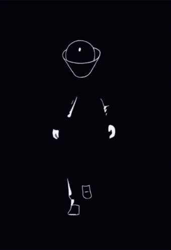

Intan Azeman.
A Final Year Student of UiTM.
My Biodata
Some information about me. My name is Intan Sakinah binti Azeman. My nickname is Intan. I am 24 year old and my date of birth is 15 September 1996. My place of birth is at Hospital Besar Kota Bharu, Kelantan. My religion is Islam and i am Malay. I have 3 siblings and I am the youngest one.
My Experience
Cotton On, 3 Damansara
Still can't get over working there. Gain a lot of new experiences, make a lot a new friends, had an awesome manager, and most importantly i had fun working with everyone. I learned a lot, from how to serve the customer to handle the store inventory and also managed the stocks. I worked there for almost a year. I also work there when i'm on sem break. It also boast my confident in talking with people and improve my social skills.
Runway
February 4th, 2018. I did a runway in helping a friend of a friend out for her project. She took fashion designer, so for their university project they need to have someone to wear their cloth and do a runway. For that year it was a Korean theme, so we needed to wear hanbok. A korean traditional cloth. I have no experience at all, but i did it anyway because it was a great opportunity for me to at least get to experience it once. Won 2nd place out of 3rd. I was shocked and happy at the same time.
My Education
University
My Diploma years was in Melaka, UiTM Lendu. I was a student of Diploma in Business Management (Insurance). Had a lot of bittersweet memories there, a lot of drama as well. Although i did not made much friends but i am blessed with the ones that i had and still have until today.
2021
Currently pursuing my Degree in Business Administration (HONS.) Marketing. I am now a final year student and next semester I am going to pursue my internship program which I am excited about and looking forward to it. Lastly, I will finally be graduating after all of that has been done.
My Family
My dad name is Azeman bin Yusoff. He works in the Navy for almost 55 years now. He was rarely at home ever since I was little but when he is, we always spend time together. I still remember how he used to make us a kite from a bamboo stick and a paper. However, sadly, most of the kite did not fly high but my brother and I had fun running around so that the kite would fly high up in the sky.
My mom name is Siti Raihan binti Mohamed. She is a teacher and she teaches highschool students. My mom is one of the woman that can do things on her own. I'd say that she is a very strong and independent woman because she can raised 3 children on her own, most of the time. Back then, my dad always have to go out to sail. I remembered that she always had to pick me up at school because I always had a fever and gastric. She would rushed to picked me up and brought me to the clinic and then she goes back to work.
The eldest one is Ahmad Taufeq and the second one is Arif Hussaini. Both of them are doing well in life, working at a big company. Back in primary school, my brothers always took care of me because we are only one year apart from each other. So, we always goes to school together. We started to grew apart when they both entered boarding school after UPSR.